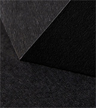

인스퍼
‘inspiring’ 과 ‘paper’의 합성어로, 디자이너 곁에서 영감을 주는 종이가 되겠다는 의미를 담고 있습니다. 러프그로스지, 색지, 무늬지, 펄지, 티끌지 등 다양한 색상과
패턴으로 구성된 개성있는 팬시지입니다
러프그로스지
- M러프
-
만년설과 같은 높은 백색도에 풍부한 질감으로 선명한 인쇄와 안정적인 후가공이 장점인 INSPER NO.1 러프그로스지입니다.
- M스무드
-
높은 백색도와 비도공지의 부드러운 촉감이 특징인 고급인쇄용지입니다. 탁월한 종이강도와 탄성으로 박, 엠보싱, 다이컷팅 등 다양한 후가공이
가능합니다.
- M에그쉘
-
비코팅지로 스무드보다 거칠고 자연스러운 펠트 느낌의 표면입니다. 패키징에 적합한 평량 구성을 가지고 있습니다.
- 뉴하이크림
-
뉴하이크림은 크림같이 부드러운 컬러와 매끄러운 질감이 특징인 고급인쇄용지입니다. 인쇄시 반무광 효과를 얻을 수 있습니다.
색지
- 시그니처
-
편안한 명도와 채도의 색구성으로 감성을 담아낸 프리미엄 색지입니다. 손끝에 닿는 포근한 촉감이 종이 자체만으로도 제품을 돋보이게 합니다.
엠보싱, 박 등 다양한 후가공을 잘 표현하여 고급 패키징에 적합합니다.
- 페스티발
-
뉴클래식은 기존 MFC지 보다 눈부심이 적으면서 백상지보다는 은은한 광택을 자랑하는 종이입니다. 기존 백상지와 대비하여 2% 이상 높은
불투명도를 자랑합니다. 원료에서부터 불투명도가 좋은 펄프를 배합하여 생산하기 때문에 두께에 비해 불투명도가 뛰어납니다.

- 매직블랙
-
매직블랙은 아무것도 섞지 않은 순수한 블랙 컬러로 삼성전자 갤럭시 패키징으로 화제가 된 고품격 흑지입니다. 럭셔리 제품의 프리미엄 패키징 제작에
적합한 종이입니다.
- 화일지
-
화일지는 균일한 색감과 높은 강도가 특징으로 고급 문구, 사무용 서식, 파일 등은 물론 내구성 있는 그래픽과 패키징에 적합한 종이입니다.
무늬지
- 매직매칭
-
매직매칭은 고유의 모노톤 컬러와 물에 젖었다 자연스럽게 마른 듯한 질감, 선명한 패턴이 특징인 그래픽용 무늬지입니다.
- 매직패브릭
-
매직패브릭은 베틀로 짠듯한 린넨 직물 질감이 특징인 그래픽용 무늬지입니다. 촘촘한 패턴과 독특한 인쇄 질감으로 자연적인 느낌으로 그래픽하기에
적합합니다.
- 매직니트
-
매직니트는 모노톤 컬러와 니트 직물 질감이 어우러져 고급스러운 인쇄와 그래픽에 적합한 종이입니다.
- 아르테바크
-
아르테바크는 나무껍질 질감을 구현한 무늬지입니다. 모노톤 컬러와 독특한 질감으로 자연적인 느낌의 작품을 제작하기에 적합합니다.